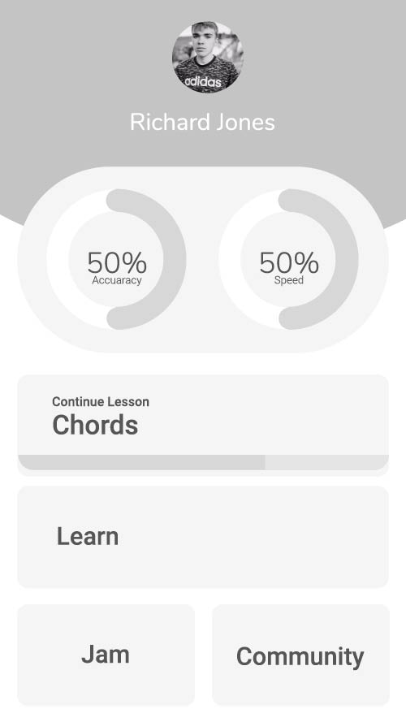
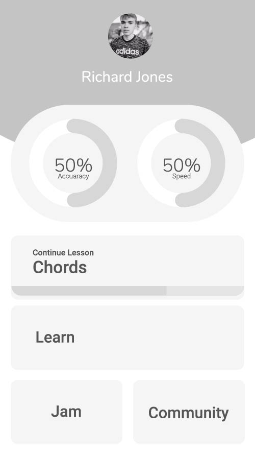

Karena Mistry
Weekly Journal
YSDN 4003
-
Assignment 2.2
PROTOTYPE LINK
Low Fidelity Wire Frames
The initial sketches I did were to get all of my ideas out of my head and onto paper. I did a lot of interations of the dashboard page because I was still figuring out what I wanted the look and feel of the app to be.

Mid Fidelity Wire Frames
The mid fidelity wire frames are very basic mockups of how I wanted to pages to flow. I didn't want too many sections, so I reduced it to just 4 categories and I was playing around with wave imagery.
 
